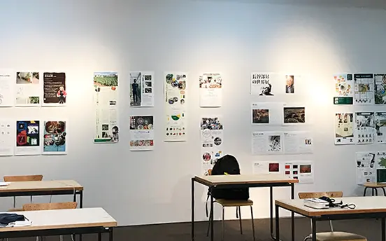

Interview
取材先：地元カフェ「百足屋」(むかでや)
温故知新のバランスの取れた地元川越の魅力が一部でも伝わればと思い、あるお店をピックアップして、取材と体験を通じてご紹介させていただきました。このページではその一連の活動報告を載せています。
- 取材日：2020年5月。※当時、10ヶ月後にOPEN予定でした。
- きっかけ：大学の課題から。
- 取材先の動機：せっかくなので、観光地・地元のDeepなコトを紹介しよう！と思い立ち決行。
- 取材・制作期間：2週間
- 制作ツール：illustrater(macbook)/Procreate(iPad)
- ポイントは・・・
- 対面授業も含めての長丁場。楽しむこと！
- 個人制作(取材)→グループ展→その結果を報告する。計画的に行うこと。
- 相手との兼ね合いもあります。コミュニケーションを大事に！
- 自分はこのお店の何を魅力に思ったのか？を常に考えて。
取材の過程 ~どんな風に取材をしましたか？~
- 事前課題(個人制作)
- 取材対象の選定・スケジュール決め
- 取材対象のアポ取り／取材目的を説明する
- 体験内容とお店の概要を取材
- 展示会に出すための掲示作成
- グループ展示(グループ制作)
- 取材先の発表
- 展示企画・制作のチーム分け
- 制作・準備
- 展示（アナログ・WEB）
- PV数の確認・ブラッシュアップ
- 展示の結果まとめ・先方にご報告(個人制作)
- 展示内容を冊子にまとめる
- 取材対象にご挨拶・冊子プレゼント
- その内容と反応を報告
- 終了
事前課題(個人制作)
事前課題で作成した掲示用のPDF
ポイント
ターゲット：川越に興味のある人や地元をより知りたい、引っ越しできたばかりで観光地以外にも特色がないか知りたい、リノベーションや蔵造りなどの建物に興味がある、日本文化の体験をしたい、そういった人々（外国の方もOK。英語対応可）。
レイアウトで気をつけたこと：グループ発表の際には壁に掲示して貼るため見やすいように文字間やフォントサイズは大きめに設定。
(個人制作)
Q & A
Q1：苦労した点は何ですか？
A1:全てです。全てが初めての体験でした、慣れないこともあり、本当にあらゆることが大変です。オープン前の忙しい時期でないか考えたり、断られた場合の別のお店のピックアップもしましたし、時間を区切って順序よく取材できるように日程を明記したり・・・。大学の授業というきっかけがなければ、おそらく全くアウェイの場所で取材などといった経験は２度としなかったでしょう。
Q2：収穫や気づいたことはありますか？
A2:取材にかける割合は9割事前準備です。 当日どれだけスムーズに進められるかは、事前の準備をいかに作り込んだかが非常に重要です。あらゆる起こるであろうハプニングを事前にシミュレーションをしておく取り越し苦労をする位でOK。そしてなるべく時間に余裕を持っておくこともポイントでした。実際、体験取材がワンセットでしたが、次から次へと時計を見つつ進めることでよりスムーズになりました。それも事前の予定や計画ができたからこそです。
グループ展示(グループ制作)
事前課題の取材先を包括した展示会
展示会までの流れ
-

取材内容を発表
-

取材内容を発表
Q & A
Q1：苦労した点は何ですか？
A1:やるべきことを明確にすること： 2週間といっても週末の土日4日間を使って、企画展示の準備をしなければならないことが非常に大変でした。最初は、一人ひとりが何をすればいいのかわからなかったり、期限の間に、何がどれくらい必要なのかわからなかったりなど、メンバー（12名）と手探りでやっていました。
Q2：収穫や気づいたことはありますか？
A2:人とやっていくことは思った以上に苦しく、そして人との掛け合わせで思った以上の結果が得られることがわかりました。：
12名の方と一緒に展示を作りました。ペースや熱量、姿勢が一人ひとり違ったり、ほとんど話したことがない人とやっていくために気を遣ったり、意見がぶつかった時など、誰もがいいものを作りたいが故に真剣であるため、もどかしい思いがありました。
しかし粘り強くみんなで何度も話し合い、気を使いすぎずに